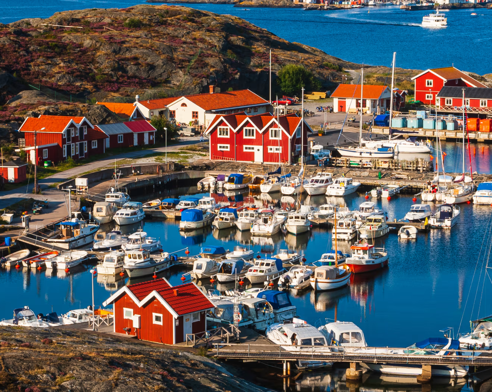
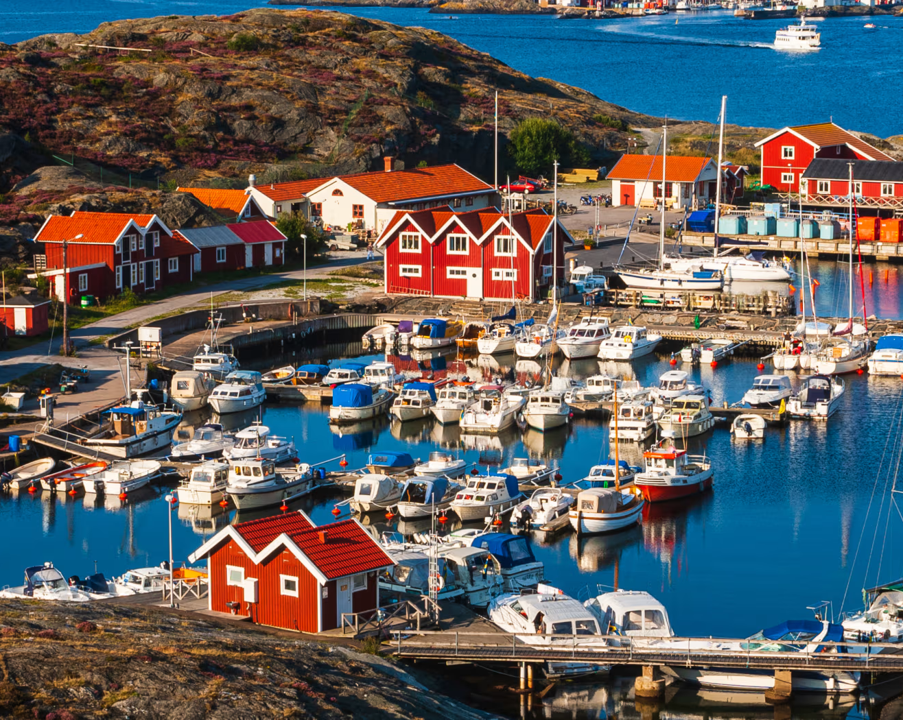
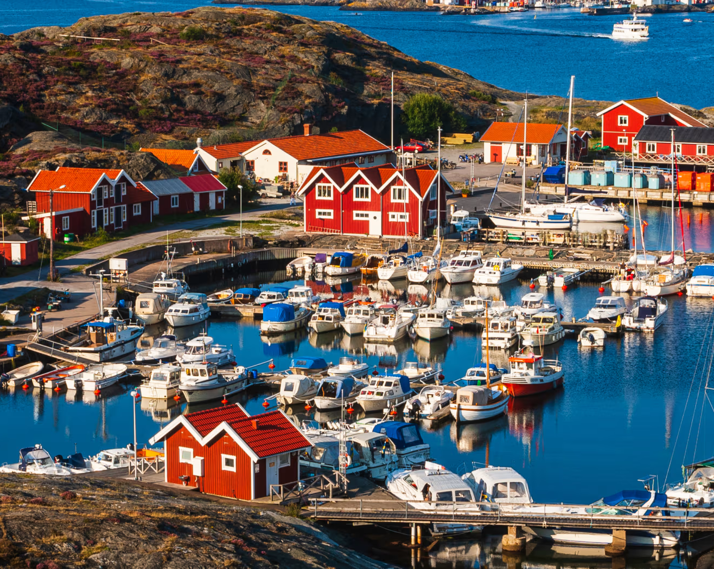

Aqui, nós vamos descobrir sobre a localização, origem, esportes e
tecnologia da Suécia, tudo com base nas matérias escolares! Vamos dar uma olhada? Basta clicar em uma das
opções acima. Caso esteja em uma tela menor, será necessário clicar no botão de menu primeiro.
Português
A Suécia é um país que une modernidade e tradição em um território marcado pela natureza. Sua capital,
Estocolmo, construída sobre diversas ilhas, apresenta uma harmonia entre prédios históricos, centros
culturais e avanços tecnológicos. O interior do país é caracterizado por vastas florestas e lagos que formam
cenários singulares, reforçando a ligação dos suecos com a natureza. Durante o verão, os habitantes celebram
o Midsommar, uma das festas mais importantes do calendário nacional, que simboliza essa relação próxima com
o meio ambiente. Além da beleza natural, o país é conhecido pela qualidade de vida elevada, fruto de
políticas sociais consolidadas.
Geografia
A Suécia está localizada no norte da Europa, ocupando grande parte da Península Escandinava. Faz fronteira a
oeste com a Noruega, a nordeste com a Finlândia e é banhada pelo mar Báltico e pelo mar do Norte. O país
possui clima temperado frio, com invernos longos e rigorosos e verões curtos e amenos. No extremo norte, o
clima é subártico, marcado por noites polares no inverno e dias de sol quase contínuo no verão. O relevo é
predominantemente plano e suavemente ondulado, mas ao norte destacam-se os Montes Escandinavos. O território
é coberto por extensas florestas e por milhares de lagos, além de arquipélagos ao longo da costa,
especialmente próximos a Estocolmo.

História
A história da Suécia é marcada por diferentes períodos de destaque. Na Era Viking, entre os séculos VIII e
XI, os suecos se destacaram como navegadores e comerciantes. Posteriormente, no final da Idade Média, o país
fez parte da União de Kalmar (1397), junto com a Dinamarca e a Noruega. No século XVII, a Suécia
consolidou-se como uma potência militar e política no cenário europeu. Nos séculos seguintes, manteve uma
política de neutralidade, permanecendo fora das duas guerras mundiais, o que contribuiu para sua
estabilidade econômica e social. A cultura sueca valoriza tradições locais, como as festividades do
Midsommar, e também se destaca pela literatura, pelo design minimalista e pela contribuição musical,
representada por artistas como o grupo ABBA e o DJ Avicii.
Ed. Física
Na Suécia, o esporte faz parte da vida cotidiana da população. O futebol é o esporte mais popular, mas o
hóquei no gelo, o handebol e o esqui também ocupam lugar de destaque, principalmente em função do clima e da
tradição. O país incentiva hábitos saudáveis, como o uso frequente da bicicleta e a prática de atividades ao
ar livre, mesmo durante os meses mais frios. Entre os grandes eventos esportivos realizados no país está o
Vasaloppet, a maior maratona de esqui de fundo do mundo, que atrai milhares de participantes todos os anos.
Essa cultura esportiva reflete o cuidado dos suecos com a saúde e o bem-estar.
Tecnologia
A Suécia é reconhecida como um dos países mais avançados em tecnologia e inovação. O país foi berço de
criações que se tornaram referências globais, como o Spotify, o Skype e o jogo Minecraft. Sua infraestrutura
digital é considerada de ponta, com internet de alta velocidade acessível em praticamente todo o território
e amplo uso de tecnologias móveis. Estocolmo, a capital, é conhecida como o "Vale do Silício da Europa",
devido à grande concentração de startups e ao elevado número de empresas que atingiram o status de
unicórnio. Esse ambiente inovador é estimulado por investimentos em pesquisa, educação e políticas públicas
voltadas para o desenvolvimento tecnológico.

 
